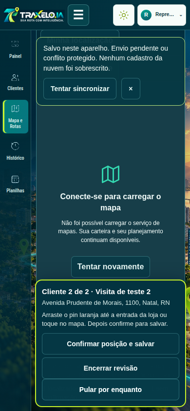
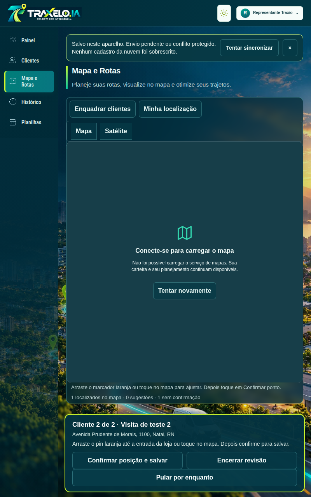
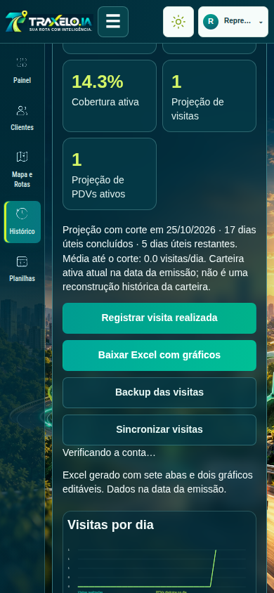
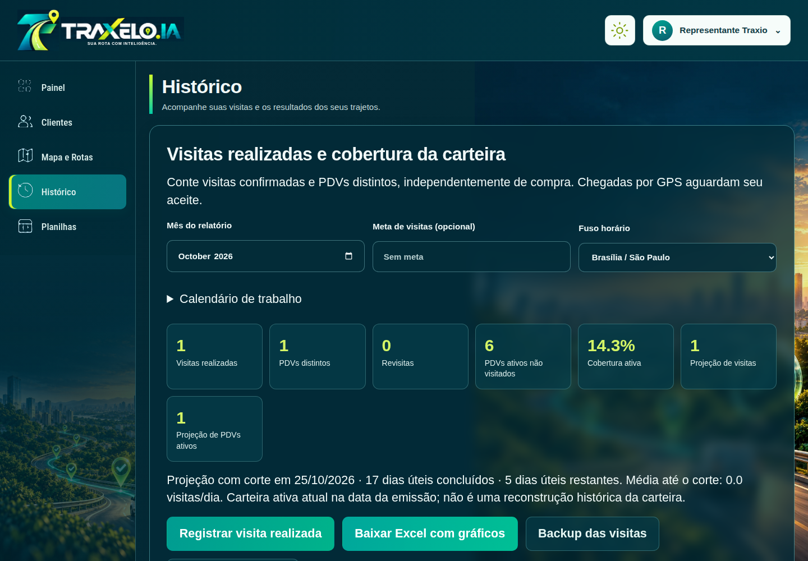

Visitas, Excel e revisão dos pins
As telas abaixo foram capturadas na versão publicada com clientes fictícios. A identidade visual e os dados existentes foram preservados.
Conferir e salvar cada cliente
Clientes → Pontos salvos para revisar → selecionar → Confirmar pontos no mapa. Ajuste, confirme e avance para o próximo cliente; pular mantém a posição pendente.

Revisão sequencial no celular.
Revisão no tablet.Histórico e relatório
Registro de visitas confirmadas, retornos e PDVs distintos. Projeção com dados até ontem. O Excel tem sete abas e dois gráficos nativos editáveis; não depende de compras.

Área de indicadores e exportação no celular.
Histórico e gráficos no computador.Busca que pode continuar
Resultados e progresso são preservados por conta. Falhas temporárias recebem tentativas limitadas; cota, permissão e sessão mostram mensagens próprias. Retomar busca evita repetir consultas já concluídas.
A cobertura real dos 157 clientes ainda depende da execução autenticada pelo usuário. Os testes publicados não representam uma medição dessa cobertura.